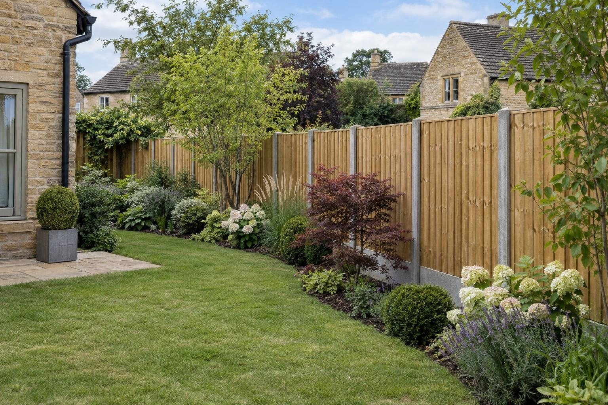
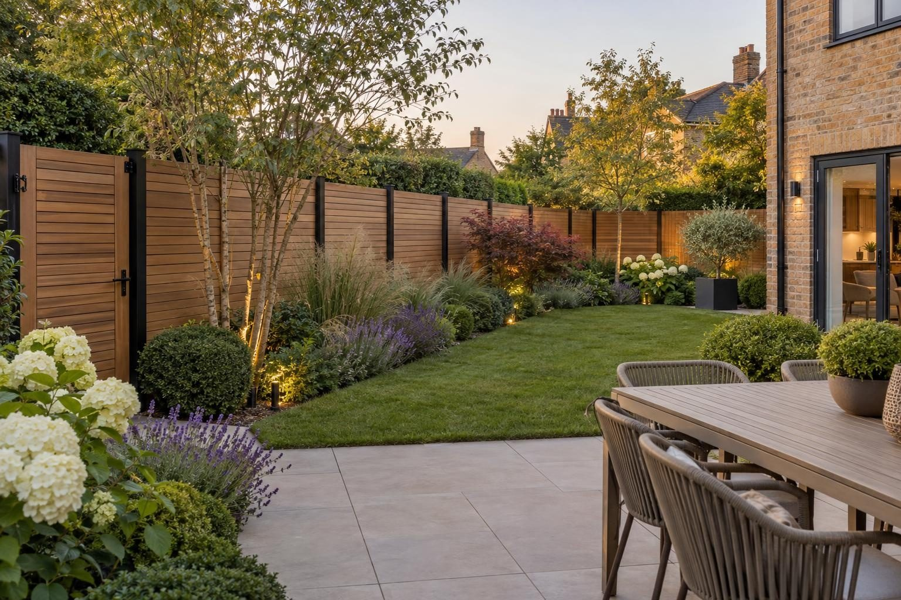

Fencing in Market Harborough
Market Harborough fences on concrete posts and gravel boards, built for slow-draining mudstone and clay and a town that knows about flooding.
Market Harborough homeowners can budget £80–£100 per metre supplied and fitted on concrete posts for closeboard, or from about £240 per metre fitted at 1.8m high for composite and aluminium slatted fencing, as guide figures ahead of a written fixed price. The town's slow-draining mudstone and clay is what we design for, keeping every timber board clear of the soil.
- Closeboard, fitted
- £80–£100 per metre
- Planning
- Not needed up to 2m (1m by a road)
- Ground
- Lias mudstone and clay; slow to drain
- Guarantee
- 5 years, in writing
Our 2026 guide prices, all in. Your fixed price comes in writing after the site visit. Council fees checked October 2026.
Fencing in Market Harborough
Market Harborough has the full range of boundaries, from walled yards around the Square to long Victorian and Edwardian gardens towards Little Bowden and Great Bowden, and the newer estates around the edge, including Airfield Farm near Lubenham. On the newer houses, the original panels are often lightweight and the posts shallow. On the older streets, it tends to be a fence that has been patched for years and is now leaning.
Either way, we build on concrete posts set in concrete with gravel boards beneath closeboard timber, or on aluminium posts for composite and aluminium slatted fencing. Slatted panels suit owners who want a modern finish that never needs painting, and both systems can carry matching side gates, privacy screens around a patio and LED-lit capping along the top rail. On a narrow terrace garden, a lighter slatted screen near the back door can make the space feel less boxed in while still giving privacy.
What makes Market Harborough different
Market Harborough is on Jurassic mudstones and clays, which drain slowly, and it sits where the Welland meets the Jordan. The town centre flooded from surface water in September 2024, and more than 50 properties flooded in July 2013. For a fence, that means timber kept off the soil on gravel boards and posts that stay put in wet ground. On Queen's Street, Little Bowden, an Article 4 direction made in 2020 covers gates, fences and walls, and the historic core is a conservation area.
A typical Market Harborough job is an Edwardian or later semi with a narrow rear garden where both side fences lean and the gravel boards, if there are any, have rotted. We remove the old run, set concrete posts, fit new gravel boards and closeboard, and often add a slatted screen near the house.
Sources: Market Harborough flood report, Sept 2024 · Market Harborough conservation area.
Permissions in Market Harborough
- PlanningA fence, wall or gate is normally permitted development up to 2m high, or 1m where it sits next to a road or footpath used by vehicles. Listed buildings need consent, and some estates have planning conditions on front boundaries. Listed buildings and the Market Harborough conservation area have tighter rules, so we check your address before anything is designed. Planning Portal: fences, gates and walls
- TreesTrees in a conservation area need six weeks' notice before work, and protected trees need consent; both are free. Harborough: tree work
- Design and priceWe measure up, check the ground and the planning position, and give you one fixed written price.
Rules checked October 2026.
What you get in Market Harborough
- Gravel boards keep timber out of slow-draining clay
- Queen's Street, Little Bowden Article 4 direction checked
- Lightweight new-build panels around the town edge replaced
- Separate rules at Great Bowden and Lubenham conservation areas considered
- Concrete or aluminium posts set in concrete at the right depth
- Gravel boards so timber never sits in the soil
- Composite and aluminium slatted panels that never need painting
The specification
- Old fence taken down and away
- Post holes dug to depth and posts set in concrete
- Gravel boards fitted along the run
- Panels or boards fixed and capped
- Gates hung and latched
- Five year workmanship guarantee in writing

“Really pleased with my new driveway. Beautifully finished, friendly professional workmen, would definitely recommend and will be using them again for the garden once other renovations complete.”
Driveway — Google review
“Absolutely great guys, job was done in good time and looks brilliant. No complaints, the driveway is immaculate. More work in the near future, thanks again!”
Driveway — Google review
Everything else we do here


Fencing in Market Harborough: questions
What will a fence cost in Market Harborough?
Are there planning restrictions on fences in Market Harborough?
Our fence on the Airfield Farm side is already leaning. Why?
Is a solid fence a problem if my garden floods?
Request a site visit in Market Harborough
We measure up, check levels and drainage, and send a written proposal with the build-up, the programme and one whole price. No pressure and no follow-up sales calls.